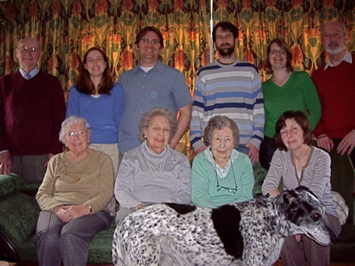

THE JAMES FAMILY
OR AT LEAST PART OF IT

David’s Father (Nov 1923 - )
Brandon, Victoria’s husband
David’s Mother (Apr 1921 - Oct 2012)
Angela’s Aunt Bay (Jun 1915 - Jan 2018)
Angela’s Mother (Dec 1910 - Jan 2011)
Angela’s Mother lived with us for some years and her Aunt moved to Steyning in September 2010. David’s parents lived in Sompting, just the other side of the South Downs until his Father moved into a residential home in December 2017.
Brandon is from Kansas City, Missouri and Krista is from Krimpen aan de Lek, a small town outside Rotterdam.
At this time Victoria and Brandon lived in Binfield, just north west of Bracknell, but moved to California in June 2014. Also, Paul and Krista lived in Twickenham, but moved to Krimpen aan de Lek near Rotterdam in September 2014. They subsequently moved to Berkenwoude, a village in the middle of nowhere. Of course, our grandchildren had not been born at the time this photo was taken. Our Granddaughter Rowan (born to Krista) and our Grandson Austin (born to Victoria) were both born at the beginning of May 2012, within three days of each other.
Then, in October 2015, Victoria gave birth to our third grandchild, a daughter by the name of Juniper.
Photos of our Grandchildren can be found here.
Some video clips of David's Dad talking about his past can be found here.
More details of our family are gradually being collected here.